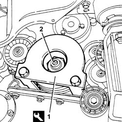
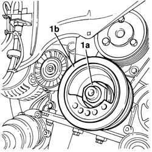
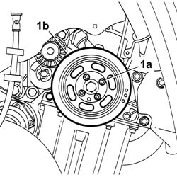
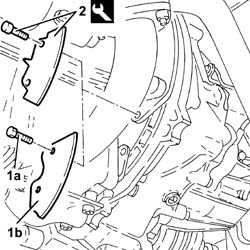
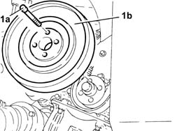
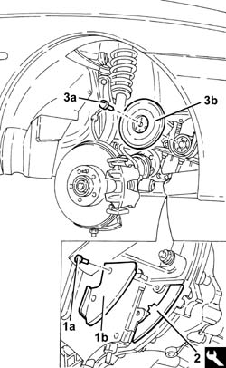

1092A12 crankshaft pulley - r+r for versions with air conditioner
- Path
- Procedures > 10 ENGINE > 1092 VARIOUS ENGINE COMPONENT CONTROLS > 1092A crankshaft pulley and idle pulleys > 1092A12 crankshaft pulley - r+r for versions with air conditioner
- Kind
- repair procedure (removal / refitting; the operation number is the code)
- Applies to
- engines: 1.6 TS , 1.8 TS, 2.5 V6, 3.2 V6, 1.9 JTD 8v , 2.4 JTD 10v; all production periods
- Interactive page
- https://sloeber94.github.io/elrnDB-a156/en/#/3237642
Applies to: engines: 2.5 V6, 3.2 V6; all production periods
 Removing
Removing
 Refitting
Refitting4450B10 Front WHEEL (one) - R.R.
7055B64 Engine compartment DUST shield in front wheel arch (one), left or right - R.R.
1092G10 single engine belt r r
1. Fit the crankshaft lock.
 | Name | Country |
|---|---|---|
1 | Counter-torque for crankshaft | 1.870.646.000 |
2. Slacken the crankshaft pulley nut.

Applies to: engines: 2.5 V6, 3.2 V6; all production periods
Remove the crankshaft lock.
1. Fully undo the nut (1a) and remove the crankshaft pulley (1b).

Applies to: engines: 2.5 V6, 3.2 V6; all production periods
Refitting
RemovingFit the crankshaft pulley and fix it using the nut, without tightening it.
Fit the crankshaft lock.
| Name | Country |
|---|---|---|
- | Counter-torque for crankshaft | 1.870.646.000 |
Tighten the crankshaft pulley nut to the specified torque.
 | Fastening | Component | Ø | Value (daNm) |
|---|---|---|---|---|
- | Nut | CRANKSHAFT PULLEY | M28 | 20.0 - 24.7 |
Remove the crankshaft lock.
1092G10 single engine belt r r
7055B64 Engine compartment DUST shield in front wheel arch (one), left or right - R.R.
Applies to: engines: 1.6 TS , 1.8 TS; all production periods
Removing
RefittingPlace the car on the lifting bridge.
Disconnect battery negative pole.
 | Name | Connector |
|---|---|---|
- | Battery |
7055B54 under-engine guard - r r
- 4450B80 cap of one wheel - r+r
4450B10 Front WHEEL (one) - R.R.
7055B64 Engine compartment DUST shield in front wheel arch (one), left or right - R.R.
1092G10 single engine belt r r
1. Unscrew the 4 screws (1a) and remove crankshaft pulley (1b).

Applies to: engines: 1.6 TS , 1.8 TS; all production periods
Refitting
RemovingFit crankshaft pulley and fix it with its screws to torque.
| Fastening | Component | Ø | Value (daNm) |
|---|---|---|---|---|
- | Bolt | CRANKSHAFT PULLEY | M8 | 2.4 - 2.9 |
End by carrying out the following operations:
1092G10 single engine belt r r
7055B64 Engine compartment DUST shield in front wheel arch (one), left or right - R.R.
4450B10 Front WHEEL (one) - R.R.
- 4450B80 cap of one wheel - r+r
7055B54 under-engine guard - r r
Connect battery negative pole.
Applies to: engines: 1.9 JTD 8v ; all production periods
Removing
RefittingPosition the vehicle on the lift.
4450B10 Front WHEEL (one) - R.R.
7055B64 Engine compartment DUST shield in front wheel arch (one), left or right - R.R.
1092G10 single engine belt r r
1. Undo the bolts (1a) and remove the flywheel guard (1b).
2. Fit the flywheel lock.
| Name | Country |
|---|---|---|
2 | Counter-torque | 1.820.630.000 |

Applies to: engines: 1.9 JTD 8v ; all production periods
1. Undo the bolts (1a) and remove the crankshaft pulley (1b).

Applies to: engines: 1.9 JTD 8v ; all production periods
Refitting
RemovingFit the crankshaft pulley and fix it tightening the bolts to the recommended torque.
| Fastening | Component | Ø | Value (daNm) |
|---|---|---|---|---|
- | Bolt | CRANKSHAFT PULLEY | M8 | 2.1 - 2.6 |
Remove the flywheel lock.
| Name | Country |
|---|---|---|
- | Counter-torque | 1.820.630.000 |
Fit the flywheel guard and fix it using the bolts.
1092G10 single engine belt r r
7055B64 Engine compartment DUST shield in front wheel arch (one), left or right - R.R.
4450B10 Front WHEEL (one) - R.R.
Remove the vehicle from the ramp.
Applies to: engines: 2.4 JTD 10v; all production periods
Removing
Refitting4450B10 Front WHEEL (one) - R.R.
7055B64 Engine compartment DUST shield in front wheel arch (one), left or right - R.R.
1092G10 single engine belt r r
1. Undo the bolts (1a) and remove the guard (1b).
2. Fit the tool.
| Name | Country |
|---|---|---|
2 | Counter-torque | 1.820.630.000 |
3. Undo the bolts (3a) and remove the crankshaft pulley (3b).

Applies to: engines: 2.4 JTD 10v; all production periods
Refitting
RemovingFit the crankshaft pulley and fix it tightening the bolts to the recommended torque.
| Fastening | Component | Ø | Value (daNm) |
|---|---|---|---|---|
- | Bolt | CRANKSHAFT PULLEY | M8 | 2.1 - 2.6 |
Remove the tool.
| Name | Country |
|---|---|---|
- | Counter-torque | 1.820.630.000 |
Fit the flywheel guard and fix it using the bolts.
1092G10 single engine belt r r
7055B64 Engine compartment DUST shield in front wheel arch (one), left or right - R.R.
Topics linked from this page (5)
- 1092G10 single engine belt r r
- 4450B10 Front WHEEL (one) - R.R.
- 7055B54 under-engine guard - r r
- 7055B64 Engine compartment DUST shield in front wheel arch (one), left or right - R.R.
- A1B Battery ( BATTERY NEGATIVE )
Topics that link to this page (33)
- 1008A46 cam shaft left rigid mount - r r
- 1008C18 link mount on engine - r r
- 1008C19 engine link mount - r r
- 1016C10 cylinder head - r + r and replace gasket
- 1020A20 crank case oil sump - r + r clean seals for sealant application
- 1020D14 front crank shaft oil seal cover - r + r and replace seals for versions with oil pump on crank shaft, timing side
- 1020D16 front crankshaft oil seal cover - r+r and replace gaskets for versions with airconditioner
- 1020D18 front crank shaft cover oil seal - replace
- 1020E10 oil seal cover (one) - l or r - on counter-rotating shafts - r + r and replace seals
- 1020E20 front oil seal of one counter-rotating shaft, l or r - r + r
- 1028H21 piston with connecting rod - r r
- 1032B14 toothed timing belt - r + r for timing adjustment or replacement versions with air conditioner
- 1032B47 toothed drive pulley - r r for versions with air conditioner
- 1032B52 toothed driven pulley (one) - r + r
- 1032B62 a/c duct pulley - r r
- 1032C18 mobile timing system tensioner - r + r for 24 valve engines
- 1032C19 mobile timing belt tensioner - r r for versions with air conditioner
- 1032C31 fixed timing tensioner - r r
- 1032C32 fixed timing system tensioner (one) r + r
- 1032D12 timing system protective cover(s) - r + r
- 1036B10 overhead camshaft - r r on vehicle
- 1036C10 camshaft in cylinder head - r r on vehicle
- 1060E10 pressure pump - r r
- 1060E30 pressure pump pulley - r r
- 1060E40 supplementary pressure pump - r r
- 1060G22 cam angle sensor - r r
- 1072B50 sleeves connecting air capacity box to inlet manifold is - r+r
- 1084B23 oil pump control return - r r
- 1088C12 water pump - r+r for versions with air conditioner
- 1092A10 Crankshaft services PULLEY - R.R.
- 1092G14 engine component single belt mobile tensioner - r + r
- 1092G15 engine component single belt mobile temperature - r rwith belt removed
- 4130B32 power steering pump mount - r r